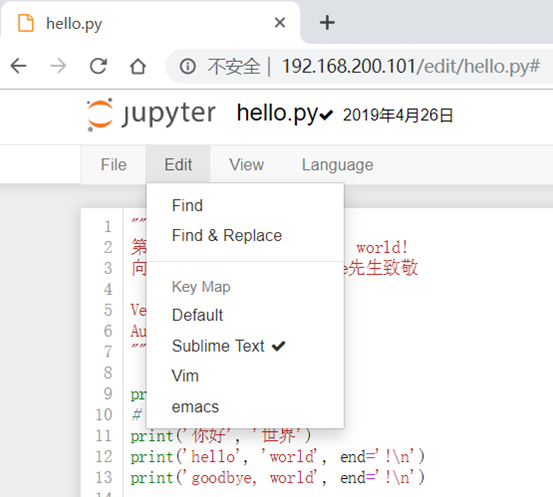
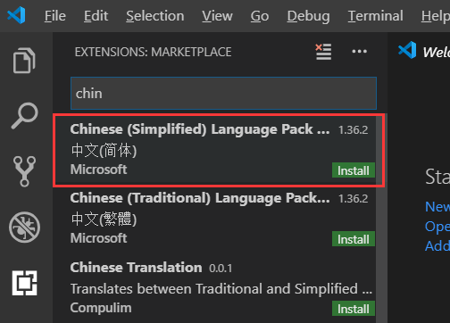

本文收录在Python从入门到精通系列文章系列
Python的创始人为吉多·范罗苏姆（荷兰语：Guido van Rossum）
此处借鉴于python维基百科：https://zh.wikipedia.org/wiki/Python
此处借鉴于python官方文档：https://docs.python.org
目前Python在Web应用开发、云基础设施、DevOps、网络爬虫开发、数据分析挖掘、机器学习等领域都有着广泛的应用，因此也产生了Web后端开发、数据接口开发、自动化运维、自动化测试、科学计算和可视化、数据分析、量化交易、机器人开发、图像识别和处理等一系列的职位。
可以在Python官方网站下载到Python的Windows安装程序（exe文件），我下载的是python-3.7.3.exe版本，需要注意：
Linux环境自带了Python 2.x版本，但是如果要更新到3.x的版本，可以在Python的官方网站下载Python的源代码并通过源代码构建安装的方式进行安装，具体的步骤如下所示。
（1）安装依赖库（因为没有这些依赖库可能在源代码构件安装时因为缺失底层依赖库而失败）。
[root@python ~]# yum -y install wget gcc zlib-devel bzip2-devel openssl-devel ncurses-devel sqlite-devel readline-devel tk-devel gdbm-devel db4-devel libpcap-devel xz-devel libffi-devel wget（2）下载Python源代码并解压缩到指定目录
[root@python ~]# wget https://www.python.org/ftp/python/3.7.3/Python-3.7.3.tgz
[root@python ~]# tar -xvf Python-3.7.3.tgz（3）切换至Python源代码目录并执行下面的命令进行配置和安装
[root@python ~]# cd Python-3.7.3/
[root@python Python-3.7.3]# ./configure --prefix=/usr/local/python37 --enable-optimizations
[root@python Python-3.7.3]# make && make install（4）配置PATH环境变量并使其生效
[root@python ~]# vim /etc/profile.d/python
export PATH=$PATH:/usr/local/python37/bin
[root@python ~]# source /etc/profile.d/python
macOS也自带了Python 2.x版本，可以通过Python的官方网站提供的安装文件（pkg文件）安装Python 3.x的版本。默认安装完成后，可以通过在终端执行python命令来启动2.x版本的Python解释器，可以通过执行python3命令来启动3.x版本的Python解释器。
python --version（2）或者是在Linux或macOS系统的终端中键入下面的命令。
python3 --version（3）当然也可以先输入python或python3进入交互式环境，再执行以下的代码检查Python的版本。
[root@python ~]# python3
>>> import sys
>>> print(sys.version_info)
sys.version_info(major=3, minor=7, micro=3, releaselevel='final', serial=0)
>>> print(sys.version)
3.7.3 (default, Apr 26 2019, 14:42:46)
[GCC 4.8.5 20150623 (Red Hat 4.8.5-36)]
可以用文本编辑工具（推荐使用Sublime、TextMate、Visual Studio Code等高级文本编辑工具）编写Python源代码并用py作为后缀名保存该文件，代码内容如下所示。
print('hello world!')
切换到源代码所在的目录并执行下面的命令，看看屏幕上是否输出了"hello, world!"。
[root@python ~]# python hello.py
hello world!或
[root@python ~]# python3 hello.py
hello world!
注释是编程语言的一个重要组成部分，用于在源代码中解释代码的作用从而增强程序的可读性和可维护性，当然也可以将源代码中不需要参与运行的代码段通过注释来去掉，这一点在调试程序的时候经常用到。注释在随源代码进入预处理器或编译时会被移除，不会在目标代码中保留也不会影响程序的执行结果。
""" 第一个Python程序 - hello, world! 向伟大的Dennis M. Ritchie先生致敬 Version: 0.1 Author: 阿龙 """
"""
第一个Python程序 - hello, world!
向伟大的Dennis M. Ritchie先生致敬
Version: 0.1
Author: 阿龙
"""
print('hello, world!')
# print("你好,世界！")
print('你好', '世界')
print('hello', 'world', sep=', ', end='!\n')
print('goodbye, world', end='!\n')（2）执行
[root@python ~]# python3 hello.py
hello, world!
你好 世界
hello, world!
goodbye, world!
IDLE是安装Python环境时自带的集成开发工具，如下图所示。但是由于IDLE的用户体验并不是那么好所以很少在实际开发中被采用。
IPython是一种基于Python的交互式解释器。相较于原生的Python交互式环境，IPython提供了更为强大的编辑和交互功能。可以通过Python的包管理工具pip安装IPython和Jupyter，具体的操作如下所示。
pip install ipython或
pip3 install ipython注：如果报错，加2个参数
[root@python ~]# pip3 install --trusted-host pypi.org --trusted-host files.pythonhosted.org ipython原因：当前python版本是3.7，网上查找说是python高版本需要验证ssl
（2）安装成功后，可以通过下面的ipython命令启动IPython，如下图所示。
当然，我们也可以通过安装Jupyter工具并运行名为notebook的程序在浏览器窗口中进行交互式代码编写操作。
pip install jupyter或
pip3 intall jupyter
[root@python ~]# jupyter notebook --ip=192.168.200.101 --port=80 --allow-root注：

import urllib.request,os;pf='Package Control.sublime-package';ipp=sublime.installed_packages_path();urllib.request.install_opener(urllib.request.build_opener(urllib.request.ProxyHandler()));open(os.path.join(ipp,pf),'wb').write(urllib.request.urlopen('http://sublime.wbond.net/'+pf.replace(' ','%20')).read())import urllib2,os;pf='Package Control.sublime-package';ipp=sublime.installed_packages_path();os.makedirs(ipp)ifnotos.path.exists(ipp)elseNone;urllib2.install_opener(urllib2.build_opener(urllib2.ProxyHandler()));open(os.path.join(ipp,pf),'wb').write(urllib2.urlopen('http://sublime.wbond.net/'+pf.replace(' ','%20')).read());print('Please restart Sublime Text to finish installation')
说明：事实上Visual Studio Code可能是更好的选择（我使用的是VS code），它不用花钱并提供了更为完整和强大的功能。
PyCharm的安装、配置和使用稍后会编写一篇《玩转PyCharm》进行了介绍，有兴趣的读者可以选择阅读。
import this 说明：当前键入上面的命令后会在交互式环境中看到如下所示的输出，这段内容被称为"Python之禅"，里面讲述的道理不仅仅适用于Python，也适用于其他编程语言。
说明：turtle是Python内置的一个非常有趣的模块，特别适用于让小朋友体会什么是编程，它最早是Logo语言的一部分，Logo语言是Wally Feurzig和Seymour Papert在1966发明的编程语言.
import turtle
turtle.pensize(4)
turtle.pencolor('red')
turtle.forward(100)
turtle.right(90)
turtle.forward(100)
turtle.right(90)
turtle.forward(100)
turtle.right(90)
turtle.forward(100)
turtle.mainloop()结果展示：